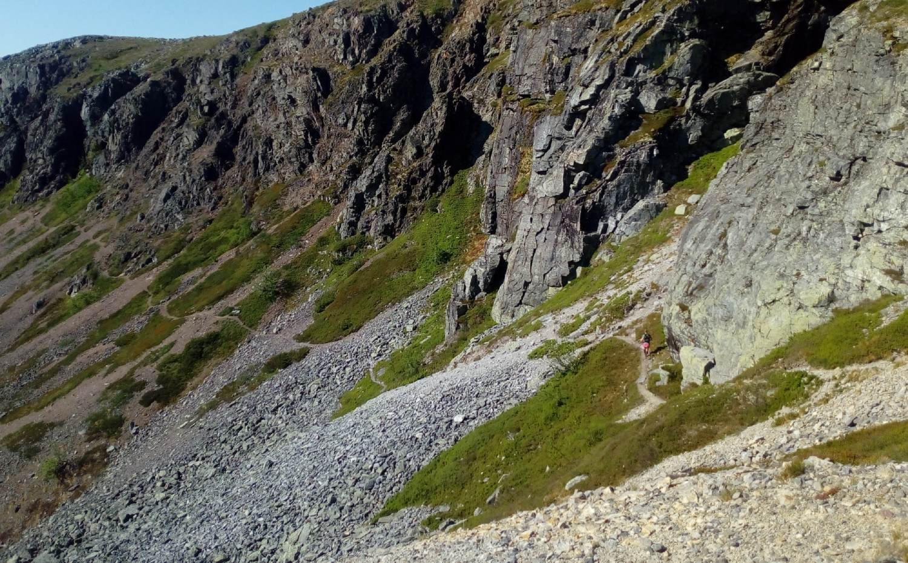

Äventyr

Fjäll, löpning och mer
Innan jag blev skidåkare var jag en riktig "frilufsare". Jag älskade (och gör det fortfarande) att vara ute i fjällmiljö och att springa. Gärna långt och länge.
Här kan du läsa mer om enstaka äventyr. Du hittar olika artiklar om när jag rullskidare genom Finland, sprang genom hela den svenska fjällkedjan (Gröna Bandet) och när jag sprang upp på Jämtland/Härjedalens alla 178 toppar.